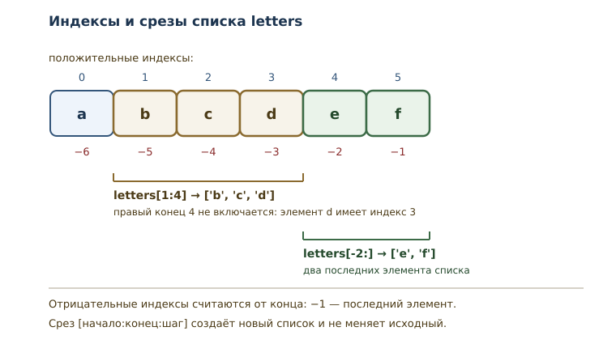
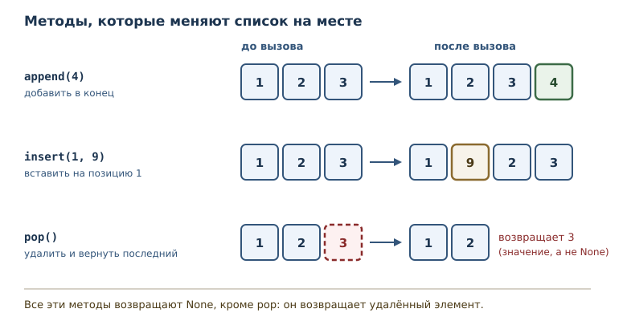

Списки: индексы, срезы и методы
Изменяемые последовательности: доступ, изменение, срезы и основные методы.
В этой главе
В предыдущей главе появились коллекции и последовательности, но работать
приходилось с range — последовательностью, которую нельзя изменить.
Настоящие данные меняются: список задач пополняется, корзина покупок
редактируется, результаты измерений сортируются. Для этого нужен список.
13.1 Зачем нужны списки
Список — изменяемая упорядоченная последовательность произвольных объектов. Три слова в этом определении важны по отдельности. Упорядоченная — значит, у элементов есть позиции и индексы, как у любой последовательности. Произвольных объектов — значит, в одном списке могут лежать числа, строки и другие значения. Изменяемая — значит, список можно менять после создания: заменять элементы, добавлять и удалять их, переставлять.
Последнее свойство отличает список от range. Диапазон задаётся один раз
и не меняется; список живёт вместе с программой. Именно поэтому список —
самая используемая коллекция Python: он подходит и для хранения данных,
которые ещё будут меняться, и для накопления результатов.
После этой главы вы сможете:
- создавать списки и обращаться к элементам по индексу;
- пользоваться отрицательными индексами и срезами;
- добавлять, удалять и заменять элементы;
- сортировать список и отличать сортировку на месте от создания копии;
- понимать, почему метод списка возвращает
None, и не попадаться на этом.
13.2 Создание списка
Список записывается квадратными скобками, элементы разделяются запятыми.
numbers = [10, 20, 30, 40, 50]
print(numbers)
print(len(numbers))
print(numbers[0], numbers[3])
print(20 in numbers)
print(type(numbers).__name__)
[10, 20, 30, 40, 50]
5
10 40
True
list
Список отвечает на все вопросы последовательности из предыдущей главы: у него есть длина, элементы доступны по индексу, работает проверка вхождения. При печати список показывается в квадратных скобках — это удобная форма записи, по которой видно и значения, и их порядок.
Пустой список записывается как []. Его длина равна нулю, и это
нормальное начальное состояние, из которого список наполняется.
squares = []
for number in range(1, 5):
squares.append(number ** 2)
print(squares)
[1, 4, 9, 16]
Такой приём — начать с пустого списка и добавлять элементы в цикле —
встречается постоянно. Метод append добавляет элемент в конец; о нём
подробнее ниже.
13.3 Изменение элемента
Список изменяем: элементу можно присвоить новое значение по индексу.
numbers = [10, 20, 30]
numbers[1] = 25
print(numbers)
numbers[0] = numbers[0] + 100
print(numbers)
[10, 25, 30]
[110, 25, 30]
Присваивание по индексу заменяет элемент, не меняя длину списка. Это
отличие от добавления: замена возможна только для существующей позиции.
Попытка присвоить значение по индексу, которого нет, поднимает
IndexError.
Изменяемость — свойство самого списка, а не имени. Если два имени связаны с одним списком, изменение видно через оба. Подробно это разобрано в главе о ссылках и копировании; пока достаточно помнить, что список — не «значение-снимок», а объект, который можно менять.
13.4 Отрицательные индексы
Кроме индексов от начала, у последовательностей есть отрицательный
индекс — индекс, отсчитываемый от конца. -1 — последний элемент,
-2 — предпоследний, и так далее.
numbers = [10, 20, 30, 40, 50]
print(numbers[-1])
print(numbers[-2])
print(numbers[-5])
50
40
10
Отрицательный индекс удобен, когда нужен последний элемент, а длину
списка не хочется вычислять. Соответствие простое: numbers[-1]
равносильно numbers[len(numbers) - 1]. Первый элемент можно взять как
numbers[-len(numbers)].
Граница действует и здесь: numbers[-6] для списка из пяти элементов —
ошибка, потому что такого элемента нет.
numbers = [10, 20, 30]
print(numbers[-4])
IndexError: list index out of range
13.5 Срезы
Срез — часть последовательности, задаваемая выражением
[начало:конец:шаг]. Срез не меняет исходный список, а создаёт новый
список из выбранных элементов. Правая граница не включается — то же
правило полуоткрытого интервала, что у range.
letters = ["a", "b", "c", "d", "e", "f"]
print(letters[1:4])
print(letters[:3])
print(letters[3:])
print(letters[:])
print(letters[::2])
print(letters[1:5:2])
['b', 'c', 'd']
['a', 'b', 'c']
['d', 'e', 'f']
['a', 'b', 'c', 'd', 'e', 'f']
['a', 'c', 'e']
['b', 'd']
Разберём строку за строкой. letters[1:4] берёт элементы с индексами 1,
2, 3 — то есть b, c, d; индекс 4 уже не входит. Если начало
опущено, срез начинается с нуля; если опущен конец — идёт до конца
списка. letters[:] копирует весь список. Третий параметр — шаг:
letters[::2] берёт каждый второй элемент, а letters[1:5:2] — каждый
второй на отрезке от 1 до 5.
Отрицательные значения работают и в срезах: они отсчитываются от конца.
letters = ["a", "b", "c", "d", "e", "f"]
print(letters[-2:])
print(letters[:-2])
print(letters[::-1])
['e', 'f']
['a', 'b', 'c', 'd']
['f', 'e', 'd', 'c', 'b', 'a']
letters[-2:] — два последних элемента, letters[:-2] — всё, кроме двух
последних, а letters[::-1] — перевёрнутая копия. Обратите внимание:
срез с шагом -1 не меняет исходный список, а создаёт новый.

Срез терпим к выходящим за границы значениям: слишком большой конец просто означает «до конца списка».
numbers = [10, 20, 30]
print(numbers[1:100])
print(numbers[5:9])
[20, 30]
[]
Это отличается от обращения по индексу: numbers[100] — ошибка, а
numbers[1:100] — допустимый срез. Причина в том, что срез описывает
диапазон позиций, а не конкретный элемент.
13.6 IndexError
IndexError — исключение, которое поднимается при обращении к
несуществующему индексу последовательности. Причина всегда одна:
индекс вышел за допустимый диапазон 0 .. len - 1 (или, для
отрицательных, ниже -len).
numbers = [10, 20, 30]
print(numbers[3])
IndexError: list index out of range
В списке три элемента, допустимые индексы — 0, 1, 2. Индекс 3 означает
четвёртый элемент, которого нет. Сообщение list index out of range
переводится буквально: «индекс списка вне диапазона».
Типичная причина — ошибка на единицу: путают длину и последний индекс.
Если нужен последний элемент, пишите numbers[-1] или
numbers[len(numbers) - 1], но не numbers[len(numbers)].
13.7 Методы списка
Метод списка — операция над списком, вызываемая через точку:
numbers.append(4). Методы меняют список или возвращают информацию о
нём. Основные методы собраны в таблице.
| Метод | Что делает | Возвращает |
|---|---|---|
append(x) |
добавляет x в конец |
None |
extend(iterable) |
добавляет все элементы из iterable | None |
insert(i, x) |
вставляет x на позицию i |
None |
remove(x) |
удаляет первый элемент со значением x |
None |
pop() |
удаляет и возвращает последний элемент | элемент |
pop(i) |
удаляет и возвращает элемент с индексом i |
элемент |
sort() |
сортирует список на месте | None |
reverse() |
переворачивает список на месте | None |
index(x) |
возвращает индекс первого вхождения x |
индекс |
count(x) |
считает вхождения x |
число |
index(x) поднимает ValueError, если значения нет, а pop() на пустом
списке — IndexError.
Обратите внимание на третий столбец: методы, которые меняют структуру и не
извлекают значение (append, extend, insert, remove, sort,
reverse), возвращают None. pop — исключение: он меняет список и
возвращает удалённый элемент, поэтому его результат можно сразу использовать,
а результат append(...) — нет.

13.8 append: добавление в конец
Метод append добавляет один элемент в конец списка, изменяет список и
возвращает None.
numbers = [10, 20]
result = numbers.append(30)
print(numbers)
print(result)
[10, 20, 30]
None
Здесь кроется классическая ловушка. Запись numbers = numbers.append(30)
присвоит имени numbers значение None и потеряет список. Правильно
вызывать метод отдельной инструкцией.
Метод extend добавляет сразу несколько элементов из другого
итерируемого объекта, а append добавляет переданное значение как один
элемент — даже если это другой список.
numbers = [10, 20]
numbers.extend([30, 40])
print(numbers)
numbers.extend(range(50, 53))
print(numbers)
[10, 20, 30, 40]
[10, 20, 30, 40, 50, 51, 52]
13.9 Вставка, удаление и извлечение
Три операции покрывают большинство правок: вставить в середину, удалить по значению, извлечь по позиции.
numbers = [10, 20, 30]
numbers.insert(1, 15)
print(numbers)
numbers.remove(20)
print(numbers)
last = numbers.pop()
print("взяли:", last)
print(numbers)
first = numbers.pop(0)
print("взяли:", first)
print(numbers)
[10, 15, 20, 30]
[10, 15, 30]
взяли: 30
[10, 15]
взяли: 10
[15]
insert(1, 15) ставит 15 на позицию 1 и сдвигает остальные элементы
вправо. remove(20) удаляет первый элемент со значением 20 — именно
значение, а не позицию. pop() без аргумента удаляет последний элемент и
возвращает его; pop(0) удаляет первый. Разница между remove и pop
принципиальна: remove ищет значение, pop работает с позицией.
Если значения нет, remove поднимает ValueError.
numbers = [10, 20, 30]
numbers.remove(99)
ValueError: list.remove(x): x not in list
13.10 Сортировка
sort сортирует список на месте и возвращает None; встроенная
функция sorted возвращает новый отсортированный список, не меняя
исходный.
numbers = [30, 10, 50, 20]
numbers.sort()
print(numbers)
numbers.sort(reverse=True)
print(numbers)
print(numbers.sort())
[10, 20, 30, 50]
[50, 30, 20, 10]
None
Третья строка вывода показывает возвращаемое значение sort — None.
Поэтому запись numbers = numbers.sort() обнулит имя. Если нужен новый
список, применяйте sorted.
numbers = [30, 10, 50, 20]
ordered = sorted(numbers)
print(ordered)
print(numbers)
[10, 20, 30, 50]
[30, 10, 50, 20]
numbers остался в исходном порядке, а ordered — новый список. Выбор
между sort и sorted зависит от того, нужен ли исходный порядок дальше.
13.11 Инструкция del
Инструкция del удаляет элемент по индексу или срез. В отличие от
remove, она работает с позицией и не возвращает удалённое значение.
numbers = [10, 20, 30, 40, 50]
del numbers[1]
print(numbers)
del numbers[1:3]
print(numbers)
[10, 30, 40, 50]
[10, 50]
Первая del удалила элемент с индексом 1. Вторая удалила срез с
индексами 1 и 2 — то есть 30 и 40. После удаления элементы сдвигаются,
поэтому индексы оставшихся меняются.
13.12 Срез создаёт копию
Срез возвращает новый список. Это важно: изменение среза не влияет на исходный список.
numbers = [10, 20, 30, 40, 50]
slice_copy = numbers[1:3]
slice_copy[0] = 99
print(numbers)
print(slice_copy)
[10, 20, 30, 40, 50]
[99, 30]
Изменение slice_copy не затронуло numbers: это два разных объекта.
Срез numbers[:] — простейший способ сделать поверхностную копию
списка. Глубокая копия понадобится, если внутри списка лежат другие
изменяемые объекты; об этом — в главе о ссылках.
Срезу можно и присвоить новый список: тогда заменяется целый участок, а не один элемент.
numbers = [10, 20, 30, 40, 50]
numbers[1:3] = [21, 31, 41]
print(numbers)
numbers[1:3] = []
print(numbers)
[10, 21, 31, 41, 40, 50]
[10, 41, 40, 50]
Первая замена поставила на место двух элементов три, поэтому список
удлинился. Вторая замена пустым списком удалила участок — это ещё один
способ удаления по срезу, равносильный del numbers[1:3]. Такое
присваивание меняет исходный список, потому что слева стоит не новый
объект, а участок существующего.
13.13 Список как аргумент функции
Изменяемость проявляется и при передаче в функцию: список передаётся как объект, поэтому изменения внутри функции видны вызывающему коду.
def add_item(items, value):
items.append(value)
numbers = [1, 2]
add_item(numbers, 3)
print(numbers)
[1, 2, 3]
Функция ничего не возвращает, но список изменился. Иногда это и нужно, а иногда — нежелательный побочный эффект. Если функция должна вернуть новый список, а входной сохранить, скопируйте его через срез.
def with_item(items, value):
result = items[:]
result.append(value)
return result
numbers = [1, 2]
extended = with_item(numbers, 3)
print(numbers)
print(extended)
[1, 2]
[1, 2, 3]
Соглашение простое и полезное: функция меняет аргумент только тогда,
когда это следует из её названия. add_item звучит как действие над
списком, with_item — как создание нового. Название должно сообщать о
побочном эффекте, иначе читатель кода ошибётся.
13.14 Типичные ошибки
Присваивать результат изменяющего метода. numbers = numbers.append(5) — теперь numbers равно None. Методы append,
sort, reverse, insert, remove, extend возвращают None.
Путать длину и последний индекс. Для списка из пяти элементов
последний индекс равен 4. numbers[5] — IndexError.
Путать remove и pop. remove(x) удаляет по значению и ничего не
возвращает; pop(i) удаляет по индексу и возвращает элемент.
Менять список во время перебора. Удаление элементов внутри
for number in numbers приводит к пропускам, потому что индексы
сдвигаются. Собирайте результат в новый список или перебирайте копию.
Считать, что sort вернёт список. Он возвращает None; для нового
списка есть sorted.
Ожидать, что срез изменит исходный список. Срез копирует. Для изменения части списка используют присваивание срезу, но это отдельная тема для практики.
13.15 Упражнения
1. Чтение списка
Дан список numbers = [5, 10, 15, 20, 25]. Не запуская код, определите:
первый элемент, последний элемент, длину, элемент с индексом 2 и
результат проверки 20 in numbers. Проверьте ответы программой.
2. Изменение элементов
Начните со списка [1, 2, 3]. Добавьте в конец 4, вставьте 0 в начало,
замените элемент с индексом 2 на 20. Выведите итоговый список и
объясните, почему после вставки индексы сдвинулись.
3. Срезы
Для letters = ["a", "b", "c", "d", "e", "f"] запишите, что вернут
выражения letters[2:5], letters[-3:] и letters[::3]. Проверьте
запуском и объясните каждую границу; для letters[-3:] начало задаётся
отрицательным индексом.
4. Сортировка
Дан список [4, 1, 3, 2]. Отсортируйте его по возрастанию методом
sort, затем выведите убывающий порядок через sorted, не меняя
исходный список. Объясните разницу между двумя способами.
5. Удаление
Дан список [10, 20, 30, 40, 50]. Удалите элемент с индексом 2, затем
удалите элементы с чётными индексами (0, 2, …) оставшегося списка с помощью
del и среза. Выведите результат.
6. Работа со словами
Дан список ["яблоко", "груша", "банан"]. Добавьте "слива",
отсортируйте список, затем удалите первый элемент через pop(0).
Выведите результат.
7. Ловушка append
Объясните, что выведет программа, и почему это опасно:
numbers = [10, 20, 30]
result = numbers.append(40)
print(result)
print(numbers)
8. Границы среза
Что выведут numbers[1:100] и numbers[5:9] для
numbers = [10, 20, 30]? Почему срез не поднимает IndexError, хотя
индекс 100 в списке отсутствует?
9. Извлечение в цикле
Дан список [10, 20, 30, 40]. Используя pop() в цикле while,
просуммируйте все элементы. Объясните, почему условие цикла записывается
как while numbers: и что произойдёт, если забыть про удаление.
10. Фильтр чётных
Напишите функцию evens(numbers), которая возвращает новый список из
чётных элементов входного списка. Используйте пустой список и append.
Проверьте на [1, 2, 4, 5, 6, 7].
11. Сортировка без изменения оригинала
Напишите функцию normalize(numbers), которая возвращает
отсортированную копию входного списка, не меняя его. Проверьте, что
исходный список остался в прежнем порядке.
13.16 Проверка понимания
- Чем список отличается от
rangeпо изменяемости и по назначению? - Почему нумерация с конца начинается с
-1, а не с-0? - Чем
numbers[3]отличается отnumbers[3:4]по результату и по поведению при выходе за границу? - Почему
appendвозвращаетNoneи чем это опасно? - Чем
removeотличается отpopпо аргументу и результату? - Чем
sortотличается отsorted? - Почему срез создаёт копию, а изменение элемента — нет?
13.17 Что дальше
Список — изменяемая последовательность. Но не все наборы данных должны меняться: иногда важно зафиксировать состав значений и защитить его от случайной правки. Для этого служат кортежи — неизменяемые последовательности. Об этом — в главе «Кортежи, распаковка и неизменяемость».